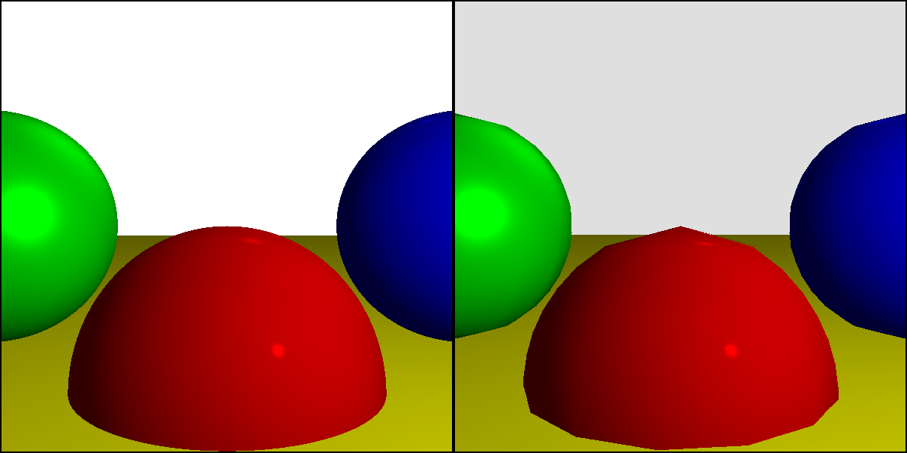
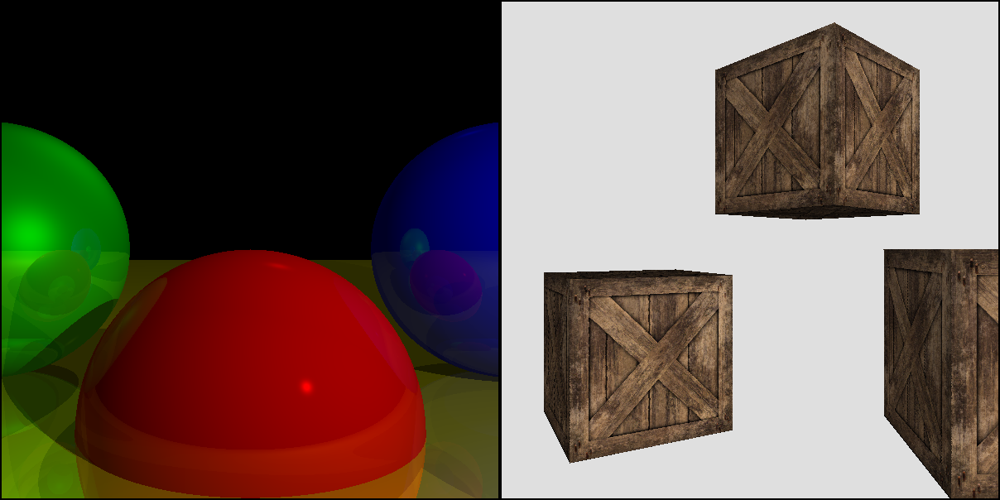

Introduction
Computer graphics is a fascinating topic. How do you go from a few algorithms and some geometric data to the special effects for movies like Star Wars and The Avengers, animated movies like Toy Story and Frozen, or the graphics of popular video games like Fortnite or Call of Duty?
Computer graphics is also a frighteningly broad topic: from rendering 3D scenes to creating image filters, from digital typography to simulating particle systems, there are a multitude of disciplines that can be thought of as part of computer graphics. One book couldn’t hope to cover all these subjects; it would take a library. This book focuses exclusively on the topic of rendering 3D scenes.
Computer Graphics from Scratch is my humble attempt to present this one slice of computer graphics in an accessible way. It is written to be easily understood by high-school students, while staying rigorous enough for professional engineers. It covers the same topics as a full university course—it is, in fact, based on my years of teaching the subject at university.
Who This Book Is For
This book is for anyone with an interest in computer graphics, from high-school students to seasoned professionals.
I have made a conscious choice to favor simplicity and clarity in the presentation. This is reflected in the choice of ideas and algorithms within the book. While the algorithms are industry-standard, whenever there’s more than one way to achieve a certain result, I have chosen the one that is easiest to understand. At the same time, I’ve put considerable effort into making sure there’s no hand-waving or trickery. I tried to keep in mind Albert Einstein’s advice: “Everything should be made as simple as possible, but no simpler.”
There’s little prerequisite knowledge and no hardware or software dependencies. The only primitive used in this book is a method that lets us set the color of a pixel—as close to from scratch as we can get. The algorithms are conceptually simple, and the math is straightforward—at most, a tiny bit of high-school trigonometry. We also use some linear algebra, but the book includes a short appendix presenting everything we need in a very practical way.
What This Book Covers
This book starts from scratch and builds up to two complete, fully functional renderers: a raytracer and a rasterizer. Although they follow very different approaches, they produce similar results when used to render a simple scene. Figure 1 shows a comparison.

While the features of the raytracer and rasterizer have considerable overlap, they are not identical, and this book explores their specific strengths, some of which can be seen in Figure 2.

The book provides informal pseudocode throughout the text, as well as links to fully working implementations written in JavaScript that can run directly in any web browser.
Why Read This Book?
This book should give you all the knowledge you need to write software renderers. It does not use, or teach you how to use, existing rendering APIs such as OpenGL, Vulkan, Metal, or DirectX.
Modern GPUs are powerful and ubiquitous, and few people have good reason to write a pure software renderer. However, the experience of writing one is valuable for the following reasons:
- Shaders are software.
The first, ancient GPUs of the early 1990s implemented their rendering algorithms directly in hardware, so you could use them but not modify them (which is why most games from the mid-1990s look so similar to each other). Today, you write your own rendering algorithms (called shaders in this context) and they run in the specialized chips of a GPU.
- Knowledge is power.
Understanding the theory behind the different rendering techniques, rather than copying and pasting half-understood fragments of code or cargo-culting popular approaches, lets you write better shaders and rendering pipelines.
- Graphics are fun.
Few areas of computer science provide the kind of instant gratification offered by computer graphics. The sense of accomplishment you get when your SQL query runs just right is nothing compared to what you feel the first time you get raytraced reflections right. I taught computer graphics at university for five years, and I often wondered why I enjoyed teaching the same thing semester after semester for so long; in the end, what made it worth it was seeing the faces of my students light up and seeing them use their first rendered scenes as their desktop backgrounds.
About This Book
This book is divided into two parts, Raytracing and Rasterization, corresponding to the two renderers we are going to build.
The first chapter introduces some basic knowledge necessary to understand these two parts. I suggest you read the chapters in order, but both parts of the book are self-contained enough that they can be read mostly independently.
Here’s a brief overview of what you’ll find in each chapter.
- Chapter 1: Introductory Concepts
We define the canvas, the abstract surface we’ll be drawing on, and
PutPixel, our only tool to draw on it. We also learn to represent and manipulate colors.
- Part I: Raytracing
- Chapter 2: Basic Raytracing
We develop a basic raytracing algorithm capable of rendering a few spheres, which look like colored circles.
- Chapter 3: Light
We establish a model of how light interacts with objects and extend the raytracer to simulate light. The spheres now look like spheres.
- Chapter 4: Shadows and Reflections
We improve the appearance of the spheres: they cast shadows on each other and can have mirror-like surfaces where we can see reflections of other spheres.
- Chapter 5: Extending the Raytracer
We present an overview of additional features that can be added to the raytracer, but which are beyond the scope of this book.
- Part II: Rasterization
- Chapter 6: Lines
We start from a blank canvas and develop an algorithm to draw line segments.
- Chapter 7: Filled Triangles
We reuse some core ideas from the previous chapter to develop an algorithm to draw triangles filled with a single color.
- Chapter 8: Shaded Triangles
We extend the algorithm from the previous chapter to fill our triangles with a smooth color gradient.
- Chapter 9: Perspective Projection
We take a break from drawing 2D shapes to look at the geometry and math we need to convert a 3D point into a 2D point we can draw on the canvas.
- Chapter 10: Describing and Rendering a Scene
We develop a representation for objects in the scene and explore how to use perspective projection to draw them on the canvas.
- Chapter 11: Clipping
We develop an algorithm to remove the parts of the scene that the camera can’t see. Now we can safely render the scene from any camera position.
- Chapter 12: Hidden Surface Removal
We combine perspective projection and shaded triangles to render solid-looking objects; for this to work correctly, we need to ensure distant objects don’t cover closer objects.
- Chapter 13: Shading
We explore how to apply the lighting equation developed in Chapter 3 to entire triangles.
- Chapter 14: Textures
We develop an algorithm to “paint” images on our triangles as a way to fake surface detail.
- Chapter 15: Extending the Rasterizer
We present an overview of features that can be added to the rasterizer, but which are beyond the scope of this book.
- Appendix: Linear Algebra
We introduce the basic concepts from linear algebra that are used throughout this book: points, vectors, and matrices. We present the operations we can do with them and provide some examples of what we can use them for.
About the Author
I’m a senior software engineer at Google. In the past, I’ve worked at Improbable (http://improbable.io), who have a good shot at building the Matrix for real (or at the very least revolutionizing multiplayer game development), and at Mystery Studio (http://mysterystudio.com), a game development company I founded and ran for about a decade and which released almost 20 games you’ve probably never heard of.
I taught computer graphics for five years at university, where it was a semester-long third-year subject. I am grateful to all of my students, who served as unwitting guinea pigs for the materials that inspired this book.
I have other interests besides computer graphics, engineering-related and otherwise. See my website, http://gabrielgambetta.com, for more details and contact information.